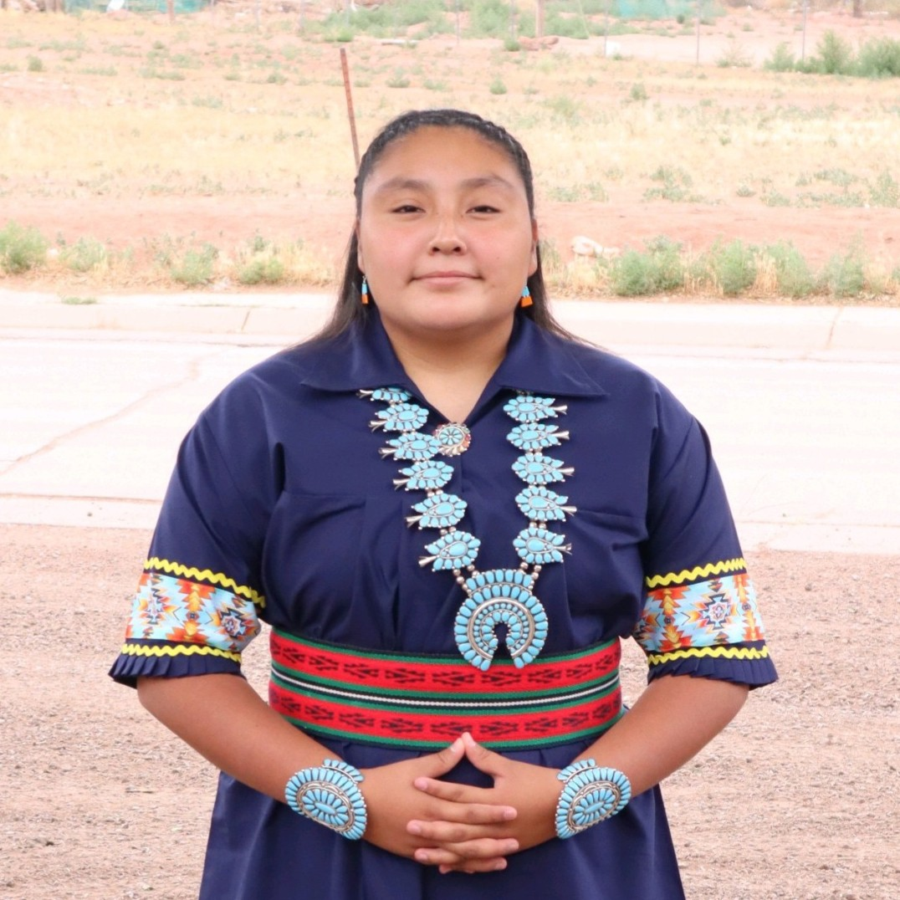
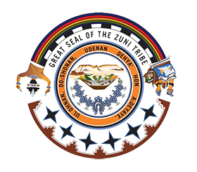

Keshhi, Ho' Caitlyn Le'shina!
Hello, I'm Caitlyn!
I am a Computer Science student at New Mexico State University with a concentration in Computer Networking and a minor in Electrical Engineering, graduating in May 2027.
This past summer I was a Software Developer Intern at NASA White Sands Test Facility through Sierra Lobo. I enjoy building full-stack web apps, real-time multiplayer games, and tools that teach networking and cybersecurity.
Software Developer Intern, NASA White Sands Test Facility (Sierra Lobo), Summer 2026
President, United Native American Organization at NMSU
B.S. Computer Science, NMSU, expected May 2027
I am from the Pueblo of Zuni in Zuni, NM. My clans are child of a frog (dakkya:kwe) and an eagle (k'yak'yali:kwe).
